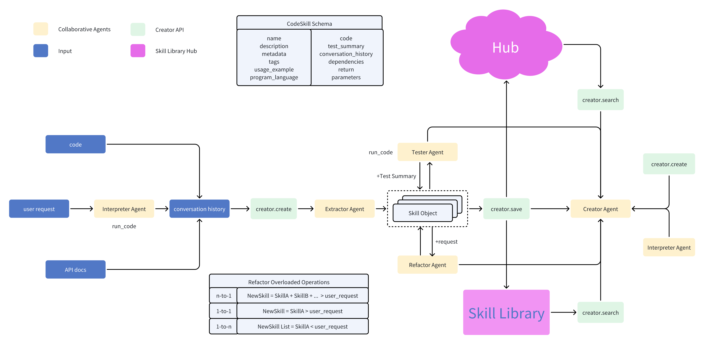

Overview
Introduction
◓ Open Creator


Build your costomized skill library
An open-source LLM tool for extracting repeatable tasks from your conversations, and saving them into a customized skill library for retrieval.
open-creator is an innovative package designed to extract skills from existing conversations or a requirement, save them, and retrieve them when required. It offers a seamless way to consolidate and archive refined versions of codes, turning them into readily usable skill sets, thereby enhancing the power of the open-interpreter.
Framework
